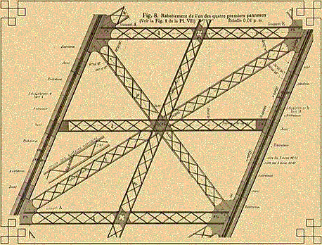

| On pages 131-132 of The Fractal
Geometry of Nature we find |
"My claim is that (well before Koch, Peano,
and Sierpinski), the tower that Gustave Eiffel built in Paris deliberately
incorporates the idea of a fractal curve full of branch points. |
"However, the A's and the tower are not made
up of solid beams, but of colossal trusses. A truss is a rigid assemblage of
interconnected submembers, which one cannot deform without deforming at least one
submember. Trusses can be made enormously lighter than cylindrical beams of
identical strength. And Eiffel knew that trusses whose 'members' are themselves
subtrusses are even lighter. See the right picture below. |
"The fact that the key to strength
lies in branch points, popularized by Buckminster Fuller, was already known to
the sophisticated designers of Gothic cathedrals. The farther we go in applying
this principle, the closer we get to a Sierpinski ideal!" |
| Here are a sketch of the general structure of the tower, along with the
plan of a detail showing the cross-braces made of cross-braces. |
 |
 |
|
| Here are two photos showing some of this detail. Click each picture for an
enlargement in a new window. |
|
|